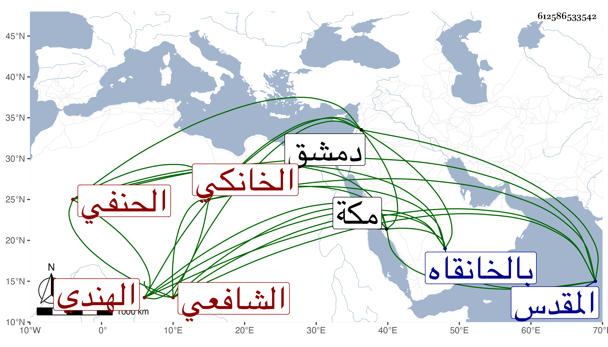

0902Sakhawi.DawLamic.ITO20230111-ara1.EIS1600.612586533542
Biography ID: 612586533542
103
علي بن محمود بن علي بن عبد العزيز بن محمد الهندي الأصل الخانكي الشافعي أبوه الحنفي هو . ولد في ليلة الأربعاء ثامن عشري ذي القعدة سنة إحدى عشرة وثمانمائة بالخانقاه وسمع بها فحفظ القرآن عند أبيه والعمدة والمنهاج وعرضهما على جماعة واشتغل شافعيا ثم تحول وقرأ بعض كتبهم وتردد لشيخنا بحيث قرأ عليه الموطأ لأبي مصعب وغيره وكذا سمع على البدر حسين البوصيري بعض الدارقطني بل كان استصحبه أبوه معه حين حج لمكة في سنة إحدى وعشرين فأسمعه على ابن سلامة شيئا من الصحيح وغيره وأجاز له ، وحج وزار بيت المقدس ودخل دمشق واجتمع بابن ناصر الدين وتكسب في بلده بالشهادة وحدث باليسير قرأ عليه العز بن فهد ونحوه وكتبت عنه من فوائده وليس كأبيه بل هو فيما قيل غير محمود . )
